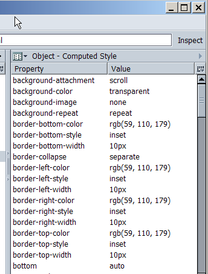

The computed style shows all the individual CSS properties and the internal computed value for these properties.
At this point the whole cascade and the reflow have been applied
Incorrect values here should result in style system bug reports
with the testcase attached. Dupes can be found when searching for computed style